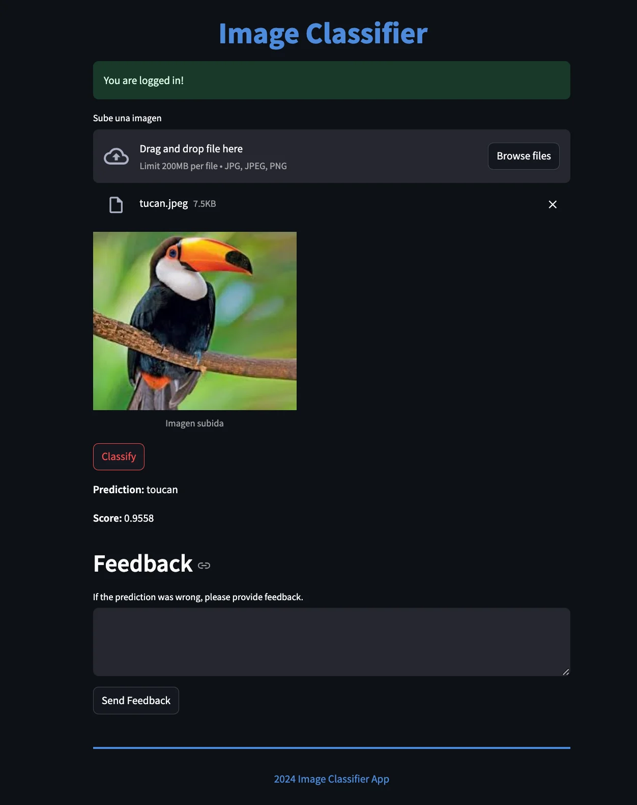

Classificador de imagens
API de classificação com uma ResNet50 pré-treinada. O Streamlit permite enviar imagens e o Redis coordena o processamento das previsões.
Python · FastAPI · Streamlit
Franco Sebastian GutierrezDesenvolvedor de software · Chaco, Argentina · Remoto
Disponível para vagas e projetos freelance
Desenvolvo aplicações web, ferramentas internas e serviços baseados em dados para empresas, órgãos públicos e pequenos negócios: do banco de dados à interface, com Go, Python e React.
01 Perfil
Sou o Franco, desenvolvedor de software. Trabalho em duas frentes com a mesma dedicação: desenvolvimento web e backend, e machine learning.
Na web, crio APIs, ferramentas internas e interfaces com Go, Python e React, e cuido de como são implantadas com Docker e Linux.
Em machine learning, com formação na AnyoneAI, analiso dados, treino e comparo modelos com Scikit-learn e LightGBM, e integro modelos a serviços com FastAPI e Redis.
Posso entrar em uma equipe por qualquer um dos dois lados, e rendo mais em projetos que precisam dos dois.
Ver meu perfil no GitHubEstágio
Desenvolvimento de software
Casa de Governo da Província do Chaco · desde abril de 2026
Ferramentas internas em Go: o Sistema de Inventário com SQL Server e o Gerador de Atas, implantados com Docker no Proxmox.
Freelance
Desenvolvimento web
Projetos para clientes
Horizonte Global: landing page multilíngue e CRM em React para uma agência de viagens.
Formação
Machine Learning
AnyoneAI
Classificador de imagens, Home Credit e um pipeline ELT de receita e entregas.
Estudos
Técnico Universitário em Programação
UTN · Facultad Regional Resistencia
Em andamento desde 2022.
02 Software
Dois sistemas em Go que automatizam trabalho administrativo, inventário e atas, duas demos frontend em React e um app pessoal.
Site comercial / Demo frontend
Landing page e catálogo de tratamentos com agendamento pelo WhatsApp para um centro de estética.
Demo frontendReact · TypeScript · Tailwind CSS
03 ML e Dados
Três projetos da AnyoneAI: um serviço de classificação de imagens, a comparação de modelos de risco de crédito e um pipeline ELT.

API de classificação com uma ResNet50 pré-treinada. O Streamlit permite enviar imagens e o Redis coordena o processamento das previsões.
Python · FastAPI · Streamlit
Análise de 307.511 pedidos de crédito e comparação de regressão logística, Random Forest e LightGBM para estimar o risco de dificuldades de pagamento.
Logistic Regression · Random Forest · LightGBM
Pipeline ELT para analisar receita e prazos de entrega, segmentar por estado e categoria e visualizar tendências do negócio.
Python · Pandas · SQLite
04 Serviços
Trabalho remotamente com equipes e clientes na Argentina e no exterior, em desenvolvimento de software e machine learning.
Sistemas web para gerenciar inventário, estoque, empréstimos ou outros processos que hoje vivem em planilhas, com banco de dados e acesso pelo navegador.
Exemplo: Sistema de InventárioAtas, relatórios ou formulários gerados em DOCX e PDF a partir de dados inseridos na web, sem copiar e colar.
Exemplo: Gerador de AtasLanding pages e painéis em React para apresentar um negócio ou organizar clientes e processos.
Exemplo: Horizonte GlobalLimpeza, exploração e consultas sobre seus dados para entender vendas, prazos ou tendências do negócio.
Exemplo: Receita e prazos de entregaComparação de modelos e métricas de validação para estimar riscos ou resultados a partir de dados históricos.
Exemplo: Home CreditModelos servidos por uma API para classificar imagens ou dados dentro de uma aplicação.
Exemplo: Classificador de imagensVocê me conta o que precisa resolver e como faz isso hoje.
Envio por escrito o escopo, o prazo e o orçamento.
Trabalho por etapas e mostro versões funcionando ao longo do caminho.
Implantação, documentação e suporte para ajustes posteriores.
05 Contato
Estou disponível para projetos freelance e oportunidades de trabalho, na Argentina e em outros países. Me conte em poucas linhas o que você precisa resolver, pelo canal que for mais cômodo para você.